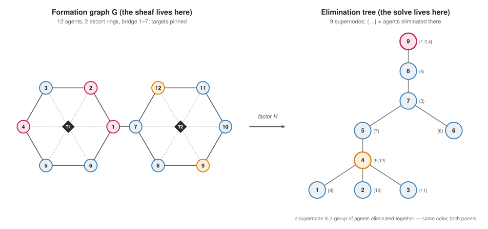
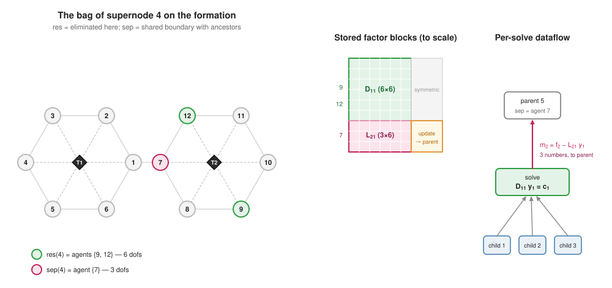

The multifrontal factorization
The previous page produced one SPD system, $H q^\star = -Bp$. This page factors it the way sparse direct solvers do, as a sequence of small dense eliminations organized on a tree, because that organization is exactly what will let the solve be cut into per-agent pieces on the next page.
Throughout, CliqueTrees.Multifrontal computes
\[H \;=\; P^\top L\, L^\top P\]
with $P$ a fill-reducing permutation and $L$ sparse lower-triangular. The running example is the 12-agent two-ring formation of the worked example, and every number and index set below is computed, not sketched (docs/scripts/distributed_solve_figdata.jl).
Elimination is a Schur complement
Eliminate one block of variables from $H$. Order the block first and partition
\[H \;=\; \begin{bmatrix} H_{11} & H_{21}^\top \\ H_{21} & H_{22} \end{bmatrix},\]
where $H_{11}$ (size $n_1$) is the block being eliminated and $H_{21}$ its coupling to everything else. One step of block Cholesky gives
\[H \;=\; \begin{bmatrix} D_{11} & 0 \\ L_{21} & I \end{bmatrix} \begin{bmatrix} I & 0 \\ 0 & H_{22} - L_{21} L_{21}^\top \end{bmatrix} \begin{bmatrix} D_{11}^\top & L_{21}^\top \\ 0 & I \end{bmatrix},\]
with
\[D_{11} = \operatorname{chol}(H_{11}), \qquad L_{21} = H_{21} D_{11}^{-\top}, \qquad U \;=\; L_{21} L_{21}^\top .\]
For an agent: eliminating my variables produces two artifacts. $D_{11}$ and $L_{21}$ are mine to keep, my rows of the factor. $U$ is my influence on whoever remains, a small dense matrix that must be added into the problem the others still have to solve. Recursing on $H_{22} - U$ until nothing remains is the Cholesky factorization. The only question sparse elimination adds is which variables feel $U$.
Sparsity: who feels the update
If $H$ is sparse, $H_{21}$ has nonzero rows only for the variables actually coupled to the eliminated block, its separator. $U = L_{21} L_{21}^\top$ is nonzero only on that separator too. So elimination is local: the update touches a small boundary, not the whole matrix.
But $U$ fills in: two separator variables become coupled by $U$ even if $H$ never coupled them. These created couplings are the fill-in, and they are why the elimination order matters. A bad order manufactures huge separators, a good one keeps them thin. (The ordering study in the benchmarks makes this quantitative: on a 512-agent chain the default order produces an elimination structure of depth 510, nested dissection depth 10.)
Supernodes and the elimination tree
Group variables that are eliminated together with identical fill structure into supernodes. Each supernode $j$ then owns precisely four objects, the res, sep, Dval, Lval fields of the computed factor:
| object | meaning | in the running example (supernode 4) |
|---|---|---|
| $\mathrm{res}(j)$ | variables eliminated at $j$, disjoint across supernodes | agents $\{9, 12\}$ (6 dofs) |
| $\mathrm{sep}(j)$ | boundary variables $j$ couples to but does not eliminate | agent $\{7\}$ (3 dofs) |
| $D_{11}$ | dense triangular factor of the residual block, $n_j \times n_j$ | $6 \times 6$ |
| $L_{21}$ | dense coupling from residual to separator, $a_j \times n_j$ | $3 \times 6$ |
The relation "$j$'s update lands inside $k$'s elimination" partially orders the supernodes, and that order is a tree: each supernode has one parent, the supernode where its separator variables begin to be eliminated.

For an agent: the tree is the fleet's org chart for linear algebra. Leaves are interior groups whose elimination bothers almost no one. The root is the last separator that everything ultimately drains into, here agents $\{1, 2, 4\}$, sitting on both sides of the bridge.
One supernode, up close
The whole factorization is this picture, repeated per supernode, leaves first:

Assemble the frontal matrix from $H$'s rows for $\mathrm{res}(j)$ plus every child's update, factor its leading block, keep $D_{11}, L_{21}$, and pass the Schur complement up:
\[U_j \;=\; \Bigl( \textstyle\sum_{c \,\in\, \mathrm{child}(j)} U_c \oplus H\text{-terms} \Bigr)_{\mathrm{sep} \times \mathrm{sep}} \;-\; L_{21} L_{21}^\top .\]
Nothing outside $\mathrm{res}(j) \cup \mathrm{sep}(j)$, the supernode's bag, is read or written. Two structural facts follow immediately, and both matter later:
- Disjoint residuals. Every variable is eliminated exactly once, so the $D_{11}/L_{21}$ blocks partition the factor. Distributing them can be duplication-free.
- Independent subtrees. Two supernodes in disjoint subtrees share no bag variables, so their eliminations commute, and they can run on different machines with no interaction whatsoever.
The two-pass solve
With the factor stored per supernode, solving $L L^\top y = b$ (in $P$'s coordinates) is two sweeps over the tree.
Forward, leaves → root (tree_forward_ldiv!). At supernode $j$, gather the right-hand side on $\mathrm{res}(j)$ into $c_1$, accumulate the children's contributions ($f_2$ collects what lands on the separator), and compute
\[y_1 = D_{11}^{-1} c_1, \qquad m_2 = f_2 - L_{21}\, y_1 .\]
$y_1$ is final, the forward solution on $\mathrm{res}(j)$. $m_2$, a vector of length $a_j = |\mathrm{sep}(j)|$, is the entire message $j$ sends its parent: the condensed effect of $j$'s whole subtree on the boundary. In the running example supernode 4 sends its parent exactly 3 numbers.
Backward, root → leaves (tree_backward_ldiv!). Now the separator values are already final (they were computed at ancestors), so each supernode just corrects and solves:
\[y_2 = D_{11}^{-\top} \bigl( c_1 - L_{21}^\top\, y\big|_{\mathrm{sep}(j)} \bigr).\]
For an agent: upward I say one short sentence about my whole subtree. Downward I hear one short sentence about the rest of the world, and that is enough to finish my own variables exactly. No agent ever sees the global problem.
Nothing on this page is approximate or new. It is the classical multifrontal method (Duff & Reid 1983; Liu 1992), organized so that every quantity is owned by one supernode. CliqueTrees.Multifrontal implements it with a single shared stack for the $m_2$ traffic; the next page replaces that stack with per-node storage and real messages, and proves nothing changes.